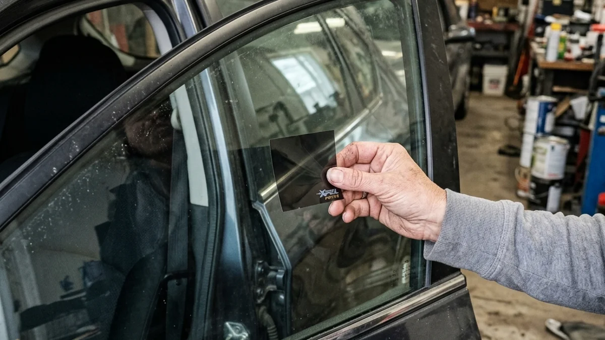

So, you're finally looking into getting your windows tinted in Riverside. You're probably tired of getting into a car that feels like a literal oven. The burning leather seats. The steering wheel you can't even touch. But then the big question hits: what is the actual auto window tinting cost going to look like?
There are a lot of factors that go into the price. You could go down the street to a sketchy popup shop, or you could visit a professional car tint service near me. The difference in quality, and price, is staggering. Let's break down exactly what you're paying for.
Dyed Film vs. Ceramic Film Costs
First off, the material matters. A lot. If you call up an auto tint shop and they quote you $99 for the whole car, run. They are using cheap, dyed film. It'll block some glare, sure. But it won't block the heat, and it's going to turn purple and bubble within a year under the harsh Inland Empire sun. A standard dyed tint job usually runs anywhere from $150 to $250. But honestly? It's not worth the money in California.
Ceramic tint is where the real magic happens. It blocks up to 99% of UV rays and rejects massive amounts of infrared heat. For a high-quality ceramic tint job at a reputable car tint service, expect to pay between $400 and $600 for a full sedan. SUVs will cost a bit more due to the larger glass area.

Labor, Skill, and Warranty
You aren't just paying for a piece of plastic film. You are paying for precision. A professional car tint shop uses computer-cut patterns so a blade never touches your vehicle's glass. They shrink the film seamlessly over curved windows using specialized heat guns. This level of craftsmanship guarantees no peeling, no gaps, and no dust trapped underneath.
At Riverside Tints, we believe in doing it right the first time. We back our ceramic tint installations with lifetime warranties against bubbling, fading, or peeling. Because when you invest in a premier tint, it should outlast the car itself.
Ready to get an exact quote? Stop searching for just any car tint service near me and bring your vehicle to the experts who care about the details. Give us a call today.